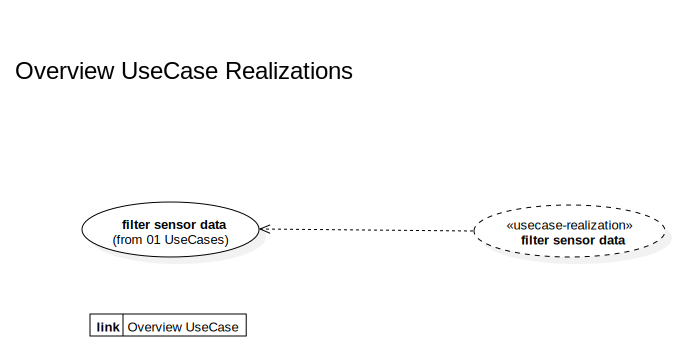

02 UseCases Realization
UMLPackage
«»
TempTracker
::
Model
::
02 UseCases Realization
Description
none
Diagrams

Overview UseCase Realizations
Properties
Name
Value
name
02 UseCases Realization
stereotype
visibility
public
importedElements
Owned Elements
«usecase-realization»filter sensor data
Overview UseCase Realizations
(link to Overview UseCase)